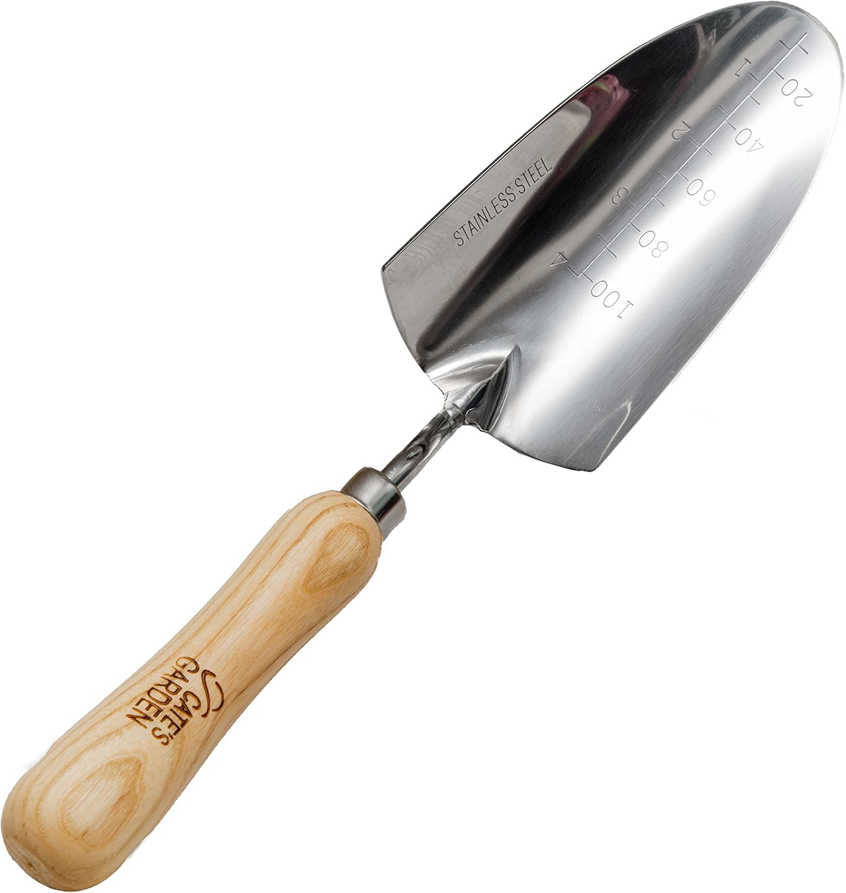
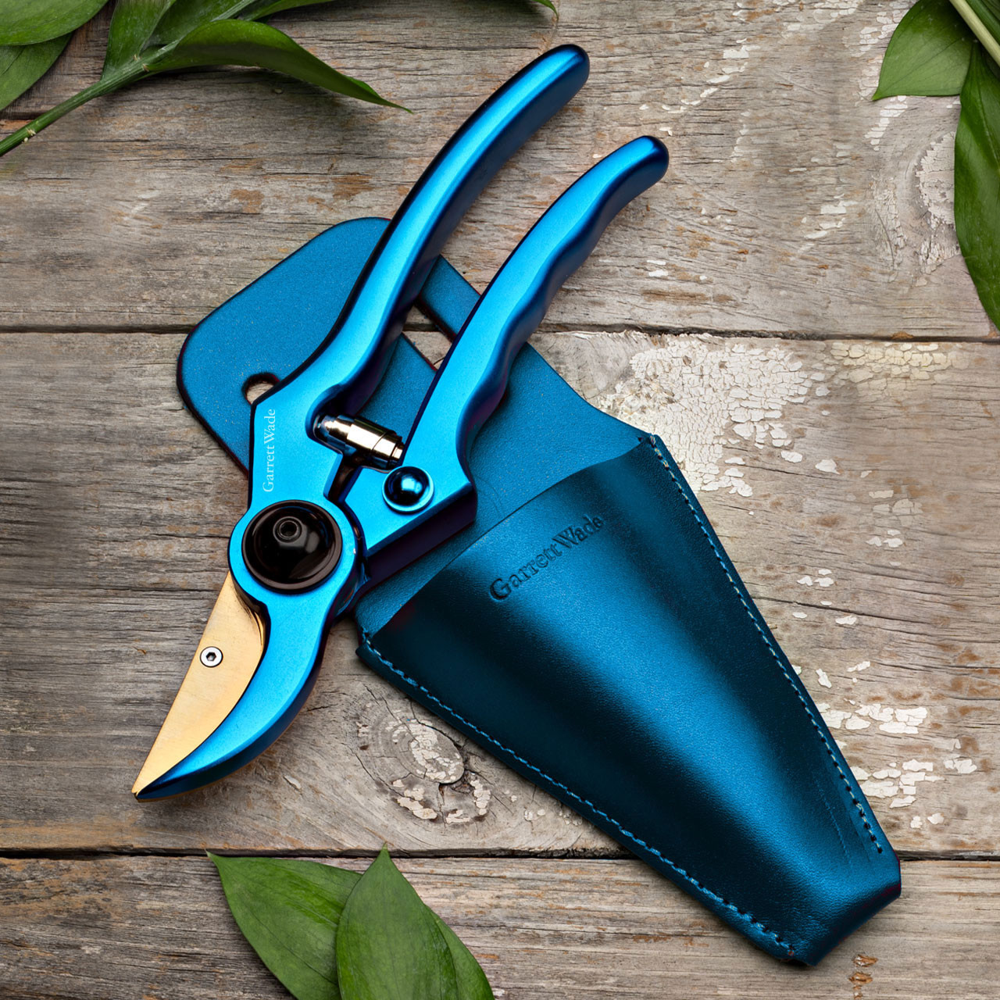

Gardening Tools: Tools for Success
Hand Trowel
Perfect for small jobs
A hand trowel is a small gardening tool used for digging, planting, and moving soil, compost, or other materials in a garden or greenhouse. It has a triangular or oval shaped blade attached to a handle, usually made of metal or plastic, that allows for precise and controlled movements in tight spaces. Hand trowels are essential tools for most gardeners and can be used for a variety of tasks such as planting seedlings, bulbs, or flowers, as well as weeding and aerating soil. These are ideal for digging small holes, planting seeds, and transplanting seedlings. It is also useful for turning soil in tight spaces or containers. A hand trowel is the perfect tool for breaking up soil in small areas, such as flower beds or vegetable gardens. The sharp blade will make light work of any clumps of soil, and you can use the trowel to create a smooth, level surface.Trowels can also be used to remove Whether you are a seasoned gardener or just starting out, having a good hand trowel is essential for your success in the garden. This simple tool makes it easy to create perfect holes for planting seeds or seedlings, to transplant established plants, and to dig out pesky weeds.
Pruning Shears
Perfect for roses
Use: Also known as Secateurs, these are designed for trimming and shaping plants, cutting back dead growth, and harvesting fruits or flowers. Pruning is essential for maintaining healthy plants. Pruning is an essential task for any gardener. It helps to maintain a plant’s shape, promote healthy growth, and remove dead or diseased branches. However, using the wrong tool can lead to imprecise cuts that damage the plant. That’s where pruning shears come in. Pruning shears are handheld tools that are designed to make precise cuts on small branches and stems. When it comes to pruning shears, there are two primary types: anvil and bypass. Anvil pruning shears have a straight blade that cuts down onto a flat edge, while bypass pruning shears have two curved blades that bypass each other like scissors. Bypass pruning shears are generally considered to be the better option for precise cuts because they create a clean cut without crushing the stem.When choosing the best pruning shears for precise cuts, there are a few critical things to consider. The first is the size of the blades. Longer blades can make it easier to reach into tight spots, but shorter blades are often more precise. The second is the quality of the blades. Dull blades will crush the stem rather than making a clean cut, so it’s important to choose pruning shears with sharp blades. Finally, the ergonomics of the pruning shears are essential. Comfortable handles that fit well in your hand will reduce hand fatigue and make it easier to make precise cuts.